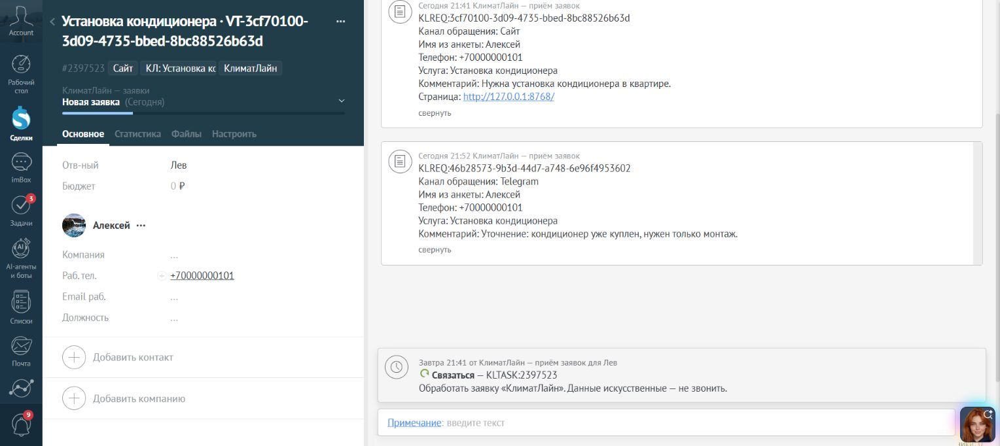

Интеграция / КлиматЛайн
Заявки с сайта и из Telegram в amoCRM. Обращения из двух каналов в одной CRM. Сотрудник видит источник, историю клиента, задачу и уведомление.
Собственный проект Virentora. Данные примера искусственные.
Итог основного примера
Два обращения → один контакт → одна открытая сделка → одна первичная задача

↗ Увеличить снимок Итоговая карточка: два канала, общий контакт, история и первичная задача.
01
Как проходит обращение.
Разбор сохранённого примера. Работа проверена 30 сентября 2026.
Форма или Telegram → сохранение заявки → контакт и сделка → история и задача → уведомление
01 Заявка с сайта 02 Результат в amoCRM 03 Уточнение в Telegram 04 Другая услуга
01 Заявка с сайта Посетитель выбирает услугу и оставляет контакты. Заявка сначала сохраняется; передача подтверждается после выполненных действий в CRM.
Имя, телефон, услуга и комментарий сохраняются до передачи. На снимке — подтверждение выполненной передачи в CRM.
Для чтения деталей увеличьте исходный снимок и выберите масштаб 100%.
02 Результат в amoCRM Созданы контакт и сделка. В истории — источник и содержание обращения; сотруднику поставлена первичная задача.
Это итоговая карточка основного примера, уже после уточнения в Telegram. Видны оба обращения и одна первичная задача.
Для чтения деталей увеличьте исходный снимок и выберите масштаб 100%.
03 Уточнение в Telegram Анкета с тем же телефоном и услугой добавляет уточнение в открытую сделку. Первоначальный источник сохраняется; повторная первичная задача не создаётся.
Источник сделки остаётся «Сайт». Уточнение из Telegram хранится отдельной записью в истории той же установки.
Для чтения деталей увеличьте исходный снимок и выберите масштаб 100%.
04 Другая услуга Обслуживание того же клиента создаёт отдельную сделку и использует прежний контакт. Снимок сделан до закрытия этой сделки в дополнительной проверке.
Кадр из дополнительной проверки с другим искусственным телефоном. Внутри этого примера контакт сохраняется, а для обслуживания создаётся новая сделка.
Для чтения деталей увеличьте исходный снимок и выберите масштаб 100%.
02
Правила повторных обращений. Повторная доставка того же идентификатора не создаёт новую заявку.
Новое обращение с тем же телефоном и услугой добавляется в единственную подходящую открытую сделку.
Другая услуга или отсутствие подходящей открытой сделки создаёт новую.
Закрытая сделка автоматически не переоткрывается.
Несколько совпадений или неизвестный результат записи требуют сверки. Абсолютное отсутствие дублей при любых обстоятельствах не обещается.
Телефон используется для поиска контакта, но сам по себе не подтверждает личность.
03
Что сделано и что можно настроить. Реализовано Форма, короткая Telegram-анкета, обработчик с сохранением состояния, настоящая amoCRM, история обращений, первичная задача, уведомления и обработка существенных ошибок.
Для похожего проекта Под процесс заказчика можно согласовать услуги, поля, воронку, ответственного, сроки задач и правила повторов. Это варианты дальнейшей настройки.
Проект подтверждает интеграцию приёма заявок с amoCRM. Полное внедрение отдела продаж, телефония и аналитика в него не входят.